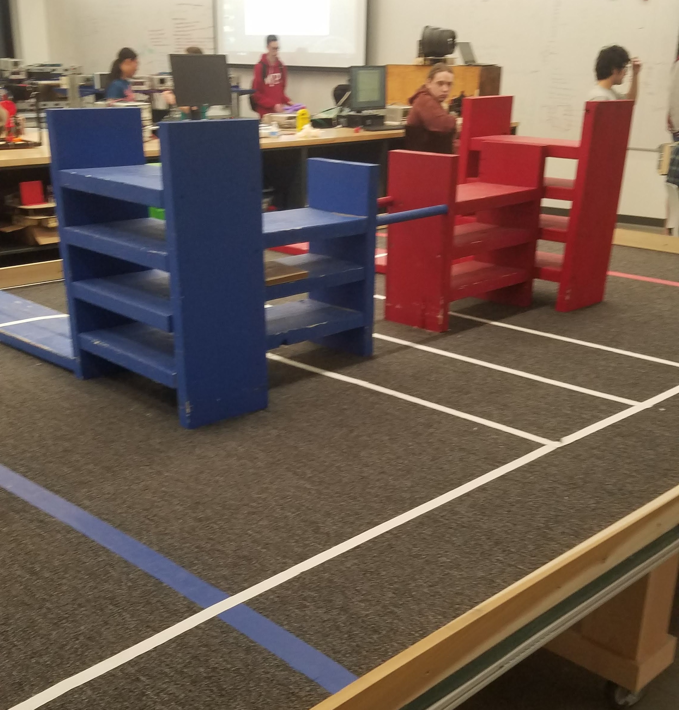
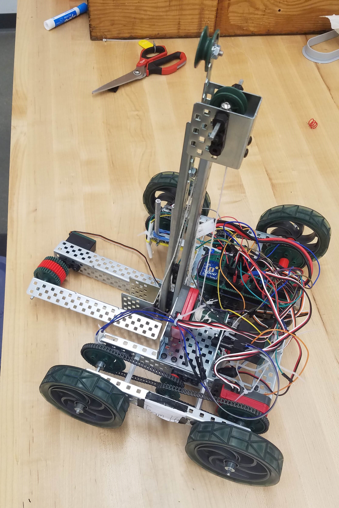

Introduction to robotics was my first robotics class at WPI. In it, I learned the basics of electrical, mechanical, and computer engineering concepts. The class concluded in a final challenge using a robot constructed from VEX parts. This robot had to lift small wooden blocks into specific shelves on the playing field. To accomplish this, my group used a telescoping elevator controlled by a winch. The robot was equipped with a custom-circuit line follower constructed from photo-sensitive resistors and op-amps acting as comparators.
The field used for the final challenge
The robot was programmed in C++ using the Arduino suite. The basics of analog and digital IO were used.
The robot was analyzed mechanically to determine the gear ratio required to operate the motors at optimal efficiency. The torque required to lift the winch with a wooden block was calculated to solve for a winch barrel diameter.
The robot was equiped with a custom line-following sensor. This sensor used two photosensitive resistors in voltage-dividers to supply an analog light reading from each side of the robot. The analog values were passed into a simple PID controller to keep the robot centered on a white line.
